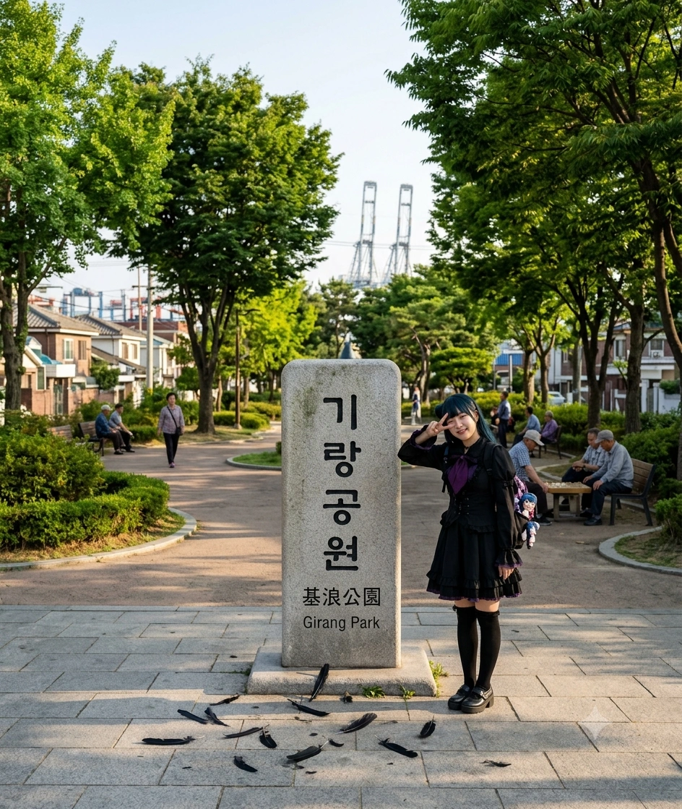

| 소재지 | 효빈광역시 남구 항동2가 (항2동) 일원 |
|---|---|
| 종류 | 근린공원, 휴식처 |
| 인접 시설 | 항동물류기지 부지 항동2가 주택단지 |
| 관리 주체 | 효빈광역시 남구청 공원녹지과 |
| 연계 교통 | 지선 효빈 버스 391 (기랑공원 하차) |
효빈광역시 남구 항동2가(행정동상 항2동)에 위치한 소규모 근린공원이다. 거대한 효빈항 물류기지 배후의 구도심 주택가 사이에 고즈넉하게 자리 잡고 있어, 본래는 동네 어르신들이 장기를 두거나 산책을 하는 평범하고 조용한 휴식처였다.
하지만 공원의 이름이 《러브 라이브! 선샤인!!》의 등장인물 츠시마 요시코(요하네)의 시그니처 포즈이자 효과음인 '기랑(ギラン)'과 완벽하게 일치한다는 사실이 알려지면서, 이 조용한 동네 공원은 효빈시를 집어삼킨 이른바 '타천·선자 유니버스'의 핵심 순례 코스 중 하나로 급부상해버렸다.
정식 한자 표기는 基浪(기랑)이다. '파도(浪)를 막아주는 기반(基)'이라는 뜻으로, 일제강점기 시절 효빈항 축조 당시에 바다의 거센 풍랑을 막기 위해 쌓았던 구(舊) 방파제의 터가 있던 곳이라 이런 멋진 이름이 붙었다. 남구청 향토사료집에도 분명히 그렇게 적혀 있다.
그러나 현재 이 사실을 믿는 사람은 거의 없다.
심지어 동네 꼬마들조차 "요하네가 타천(墮天)할 때 내는 소리에서 따온 이름 아니냐"고 굳게 믿고 있으며, 인터넷 커뮤니티나 SNS에 '기랑공원'을 검색해 봐도 항만 역사에 대한 글은 단 1도 없고, 오직 눈 한쪽을 손으로 가린 채 "기랑~!"을 외치며 찍은 오타쿠들의 인증샷만 수백 페이지가 쏟아져 나온다. 이쯤 되면 사실상 츠시마 요시코가 공원 부지를 매입해서 지은 게 학계의 정설이다.
이 공원에는 거창한 볼거리가 있는 것은 아니다. 그럼에도 불구하고 선자대학교, 타천역, 창선역 등과 함께 요시코(요하네) 팬들에게는 반드시 들러야 할 성지로 꼽힌다.
기랑공원의 가장 큰 특징이자 접근 장벽은 근처에 철도역이 전혀 없다는 점이다. 가장 가까운 지하철역이 7호선 항동1가역이나 항만해변역이지만, 걸어서 오기에는 꽤 멀고 복잡한 골목길을 통과해야 한다. 따라서 이곳을 방문하려는 순례객들에게는 효빈 버스 391번이 구원줄이자 유일한 빛이다.